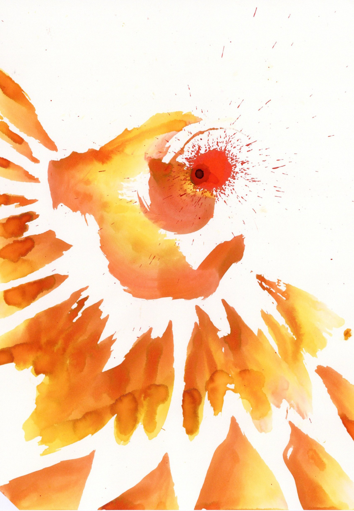
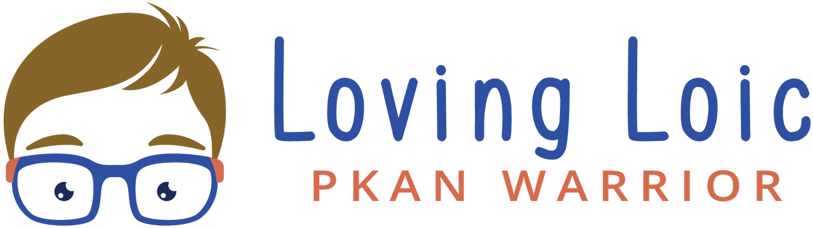
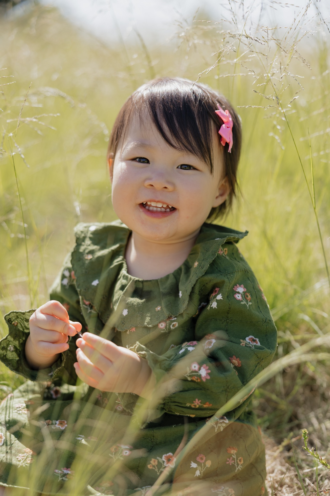

Paintings for PKAN

Original paintings sold to raise money for PKAN research. All proceeds go to the Loving Loic Foundation.
share this fundraiser →Ways to help move PKAN research forward — and ways to support families living with it right now.

Loving Loic is a nonprofit dedicated to funding research toward a cure for PKAN. The foundation has established a PKAN Gene Therapy Research Fund supporting a collaboration between PKAN physician-scientists at Oregon Health & Science University and gene-therapy scientists at UMass Chan Medical School.
The project is working to move a gene therapy from development toward a future human clinical trial. Loving Loic is currently raising the funding needed to accelerate that work.
visit Loving Loic →Not everyone has the bandwidth to organize something themselves. Sharing a fundraiser with your own community can help too.

Original paintings sold to raise money for PKAN research. All proceeds go to the Loving Loic Foundation.
share this fundraiser →PKAN can create immediate expenses for families — travel, specialist visits, equipment, therapies, time away from work, and everyday care.

Supporting Diana and her family with the costs that come with care, travel, treatment, and changing needs.
support Diana’s family →